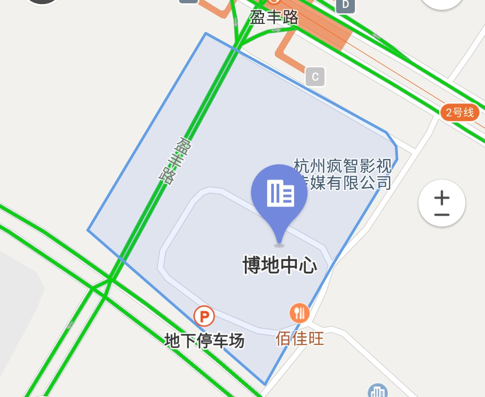

嘉医汇
您的专属家庭医生
将平凡的家庭医生服务做到
「 极致 」
「 有温度 」
嘉医汇
您的专属家庭医生
嘉医汇，全称杭州嘉医汇健康管理有限公司，是一家中美合资医疗企业，以连锁家庭医生诊所为地基，以家庭医生为核心，致力于家庭医疗服务。通过将成熟的美国家庭医疗和服务理念引进国内，将平凡的家庭医生服务做到极致，让更多人拥有自己的家庭医生，体验有温度的医疗。
孕育家庭医生的黄埔军校家庭医疗+互联网的引领者
让更多人拥有自己的家庭医生让家庭医疗+互联网改变生活
开拓创新 合作共赢 用户至上 成就不可能
追求极致 团结合作
目前杭州萧山博地中心为首家，1年内将在杭州筹建3-5家。未来会在2线或准1线城市，每年5-10家进行筹建。当您出差或旅行到了另一座城市，就可以在嘉医诊所找到适合您的家庭医生。
嘉医汇旨在为会员提供全程、专业、个性化医疗服务。嘉医跨境医疗，为您提供所需的医疗服务。嘉医学院将每年定期招收部分家庭医生学员，采用培训前自评和考评，确定受训内容及时长。线上授课，线下指导，并在培训后进行考评的方式，培养优质的家庭医生。
嘉医汇倾心打造嘉医云管家，为更多的家庭医生诊所提供技术支撑，将家庭医疗+互联网的智能医疗模式进行有效推广，成就线下线上相结合的服务模式，满足现代人的就医需求。
当社会老龄化，我们仍旧希望优雅的老去。家庭医生就像家人和朋友，从年轻的你，到年华逝去，依旧关注您的健康。嘉医汇将医疗和养老做有机结合，为优雅的您提供家人般的医疗服务。
当您希望自己是健康的，家庭医生也希望您是健康的，我们就有了共同的目标，相同的价值体系。嘉医汇将拓展健康险，为更多人的健康保驾护航。
嘉医诊所是嘉医汇园旗下的专业医疗服务机构，可为儿童、成人和老人提供常见病、多发病的诊疗及慢病管理服务。在嘉医诊所，患者可通过微信进行门诊预约，免除排队挂号和候诊烦恼。为了提供更好的就诊体验，诊所还支持电子处方流转及第三方药品配送。嘉医诊所希望帮助大众提高个人健康管理意识，为公共医疗资源提供有益补充。
